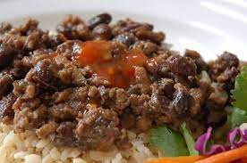

Cubanos Frijoles

Description
Originally this came from a Cuban friend, but I've since doctored it quite a bit.
This dish is hearty and a meal in itself. By adding more meat, beans, and rice,
you can feed a large group of people. You might want to add more spice as well.
Ingredients
- 2 cups brown rice
- 4 cups water
- 1 ½ pounds ground beef
- 2 tablespoons Cajun seasoning
- 1 onioin, chopped
- 2 (15 ounce) cans black beans
- 1 (6 ounce) can chopped black olives, drained
- 1/4 cup red wine vinegar
- 3 sprigs fresh cilantro, chopped
- 1/4 teaspoon ground dried chipotle pepper (Optional)
Steps
- Place rice and water in a saucepan over medium heat. Bring to a boil, then reduce heat to low and simmer for about 45 minutes, or until rice is tender.
- While the rice is cooking, brown the ground beef in a deep skillet or wok.
Season with Cajun seasoning. When meat is almost done, add the onion, and cook until the meat is browned and the onion is translucent.
Stir in the beans, olives, vinegar, and chipotle powder, if using. Mix well, cover, and simmer for 20 minutes over medium-low heat. Add the cilantro during the last 5 minutes of cooking. Serve hot over or mixed with rice.